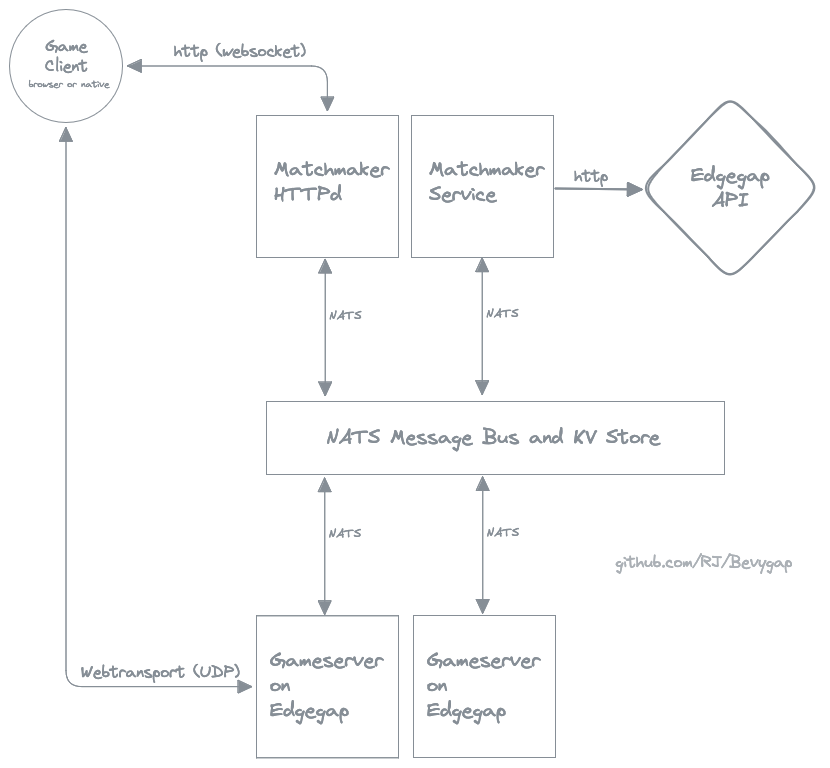

Introduction
Bevygap is a suite of tools to help you get your (bevy+lightyear) game running on Edgegap, so that servers are spun up and down in response to player demand, in appropriate locations. When players click "connect", the system either picks an existing server nearby, or spins up a new one, which takes just a few seconds.
Scaling and costs
It scales down to zero pretty well - Edgegap can be configured to terminate server instances with no players in the last 10 minutes, and you are only billed for server uptime. There's a small static cost to running your NATS server and matchmaking service. I'm running mine on the same linux server that hosts my personal website.
In theory, it will scale up pretty well too. Edgegap will keep launching new servers for you and directing new players to them. Nice problem to have, and not one i've encountered yet :)
Bevygap components
- A bevy plugin for your gameserver,
bevygap_server_plugin - A bevy plugin for your game clients,
bevygap_client_plugin - A matchmaker service that talks to the Edgegap API,
bevygap_matchmaker - A webserver frontend for your matchmaker service, that
bevygap_client_plugintalks to:bevygap_httpd - A shared crate,
bevygap_shared, used to connect to the NATS message bus. - An example game,
bevygap-spaceships, which is deployable to Edgegap using all of the above.

Dev, test, deploy cycle
Day-to-day I still do everything locally (without docker or edgegap). Need to document how to configure bevygap to bypass and connect without a token. TODO.
When it's time to deploy, just push a git tag, and the github action will containerize your server and push it to Edgegap's container registry.
TODO flesh this out....
Installation
- You need a publically accessible NATS server with a TLS certificate for Bevygap to work.
- Then we make sure Bevygap knows how to connect to your NATS server.
- We configure settings in the Edgegap dashboard, and create the gameserver docker image
- Set up the matchmaker webservice
- Finally, connect with the game client and see the whole thing in action.
Later, we'll look at how to containerize the matchmaking services for production deployments
NATS - what, why, and how.
There has to be a way to communicate between the matchmaker and the gameservers. I chose NATS, because it's both a message bus and a key-value store, both of which are very handy for this kind of thing.
It also allows you to run the matchmaker and other components on your local dev machine if you like, connect them to the production NATS server, and test using real gameservers on edgegap. This saves the hassle of doing a full deploy during the development cycle.
In fact, this tutorial starts off with deploying a public NATS server, but running all the other components locally. The NATS server has to be public because the gameservers (running on Edgegap) need to connect to it. Later on, we'll cover deploying the matchmaking stuff in containers on your server.
Creating a self-signed TLS certificate for your NATS server
We'll be running NATS server using docker, and you'll need a TLS certificate for it. The NATS docs on TLS are extensive, but here are the edited highlights:
Making certifcates
Install mkcert
Find the directory where mkcert puts its CA certificate. On my mac, this looks like:
$ mkcert -CAROOT
/Users/rj/Library/Application Support/mkcert
# Check for the rootCA.pem file:
$ ls "/Users/rj/Library/Application Support/mkcert"
rootCA-key.pem rootCA.pem # <-- this one
Now generate a certificate for your NATS server:
$ mkcert -cert-file nats-server-cert.pem -key-file nats-server-key.pem localhost ::1 nats
Make a nats-config directory, and copy the server certificate and key into it:
$ mkdir nats-config
$ mv nats-server-cert.pem nats-server-key.pem ./nats-config/
When we run the NATS server in docker, we'll ensure this nats-config directory is available at /config inside the container. With this in mind, we create a nats-server.conf file that references the server certificate, and creates some username/password pairs.
Don't forget to create real passwords before exposing this to the internet.
Create nats-config/nats-server.conf:
listen: 0.0.0.0:4222
authorization: {
users: [
{user: "matchmaker", password: "matchmaker"},
{user: "matchmaker_httpd", password: "matchmaker_httpd"},
{user: "gameserver", password: "gameserver"},
]
}
tls {
cert_file: "/config/nats-server-cert.pem"
key_file: "/config/nats-server-key.pem"
}
jetstream {
# storage directory will be mapped for you by docker:
store_dir: /data
# 100MB = high but sane limits, which we don't expect to hit:
max_memory_store: 104857600
max_file_store: 104857600
}
For a NATS client to connect, they will need the CA cert which signed the NATS server certificate, ie the rootCA.pem file – to verify the server's certificate.
We'll ship this file in the gameserver docker image, and make it available to the matchmaker and other services that establish NATS connections.
Self-signed vs Trusted CAs This can all be avoided if you use a certificate authority that is already trusted, such as LetsEncrypt. In my deployment, my NATS server reuses a certificate generated for my domain name by Traefik, which is already trusted by browsers and the NATS clients. No difference in 'how secure', and this tutorial will assume we use self-signed for now.
Deploying the NATS server
Now you need to run a nats-server docker container on a machine that is publically accessible on the internet. Hopefully you have a cheap linux server you can use. Mine runs ubuntu. Doesn't matter, as long as you can install docker on it. The gameserver won't run here, just the nats, and matchmaking stuff (pretty lightweight).
# Connect to your remote server (which has a public IP address)
$ ssh myserver
Make a new directory to work in:
$ mkdir nats-bits
$ cd nats-bits
Configuring the NATS server
Create a docker-compose.yaml file with the following contents:
version: "3.5"
services:
nats:
ports:
- "4222:4222"
image: nats:2.10.21
restart: unless-stopped
command: "--config /config/nats-server.conf"
volumes:
- ./nats-config:/config
- ./nats-data:/data
Note how the volumes: section maps your config directory to /config. An empty nats-data directory will be created for you automatically by docker.
Into your nats-bits directory on the remote server, copy your nats-config directory you made earlier.
Verify all the files are in the right place:
rj@myserver:~/nats-bits $ find .
.
./docker-compose.yaml
./nats-config
./nats-config/nats-server.conf
./nats-config/nats-server-key.pem
./nats-config/nats-server-cert.pem
Starting the NATS server
Now you can start the server:
# NB !!! older docker installs use "docker-compose", newer use "docker compose"
# so if one doesn't work, try the other.
#
# this starts up in detached mode (in the background)
$ docker compose up -d
# Check logs, Control-C to exit:
$ docker compose logs -f nats
You should now be able to connect to your NATS server from your local machine using the public IP address. Docker usually manages to manipulate the firewall for you, to make it work. Let's test that.
Back on your local machine
Install the nats-cli tool, to allow you to examine the NATS bus and key-values while your system is running.
Create a nats context to use with nats-cli. Again, NATS docs are good, edited highlights follow:
# Change the server IP/hostname, the ca path, and the user/password to match your setup.
nats context save \
--server="nats://1.2.3.4" \
--description="My NATS server" \
--user="matchmaker" \
--password="matchmaker" \
--tlsca="/Users/rj/Library/Application Support/mkcert/rootCA.pem" \
--select \
bevygap
Now you can use the nats command to access the server:
$ nats server check connection
OK Connection OK:connected to nats://nats.example.com:4222 in 135.609292ms OK:rtt time 25.149083ms OK:round trip took 0.025140s | connect_time=0.1356s;0.5000;1.0000 rtt=0.0251s;0.5000;1.0000 request_time=0.0251s;0.5000;1.0000
Congratulations! You've now got a working NATS server, which you can connect to over the internet.
Consider trying the NATS pub/sub walkthrough to get a feel for how the nats-cli tool works.
Next, we configure Bevygap so it can connect to your NATS server.
Bevygap NATS Setup
Now that nats-cli can connect to your NATS server, and we know it's working, let's ensure that the bevygap code can connect too.
Bevygap Required Environment Variables
bevygap_matchmaker, bevygap_httpd,and the gameservers (via bevygap_server_plugin) need to connect to NATS.
The NATS connection code in bevygap_shared depends on the following environment variables to set up the NATS connection.
| Variable | Required | Description |
|---|---|---|
| NATS_HOST | Yes | NATS server address eg: nats.example.com:4222 or 1.2.3.4 |
| NATS_USER | Yes | Username for NATS authentication |
| NATS_PASSWORD | Yes | Password for NATS authentication |
| NATS_CA | No | Path to CA root certificate for self-signed certs eg: /path/to/rootCA.pem |
| NATS_CA_CONTENTS | No | Contents of the CA file gets written to tmp file and used as NATS_CA 255 byte limit on edgegap for ENVS see note about set-caroot-argument.sh in 'Edgegap Setup' section |
Create nats.env file
Back on your local machine, in the bevygap directory, copy nats.env.example to nats.env,
and edit it with your server's IP address, nats user, nats password, and path to CA certificate.
nats.env:
NATS_USER=matchmaker
NATS_PASSWORD=matchmaker
NATS_HOST=1.2.3.4
NATS_CA="/Users/rj/Library/Application Support/mkcert/rootCA.pem"
Our docker-compose.yaml file will apply these environment variables to containers we run, but we
also want to set them in our shell, before we run (eg) the bevygap matchmaker service using cargo run.
# Setting environment variables in bash, on linux/mac
export NATS_USER=....
export NATS_PASSWORD=....
# Bash trick to set them from the .env file:
set -a && . ./nats.env && set +a
# How do you do this in windows? something like this maybe:
setx NATS_USER "matchmaker"
Verify your environment variables are set:
$ echo $NATS_USER
matchmaker # <-- your nats username should be printed here
The final test
The bevygap_shared crate has an example (non-bevy) program that connects to NATS and prints a success message then exits.
This will test that your environment variables are set correctly for bevygap:
$ cargo run -p bevygap_shared --example nats
...compiling...
Running `target/debug/examples/nats`
2024-11-04T09:49:23.764924Z INFO bevygap_shared: NATS: setting up, client name: bevygap_nats_test
2024-11-04T09:49:23.765494Z INFO bevygap_shared: NATS: TLS is enabled
2024-11-04T09:49:23.765498Z INFO bevygap_shared: NATS: connecting as 'matchmaker' to 1.2.3.4
2024-11-04T09:49:23.765512Z INFO bevygap_shared: NATS: using self-signed CA: /Users/rj/Library/Application Support/mkcert/rootCA.pem
2024-11-04T09:49:23.777111Z INFO bevygap_shared: 🟢 NATS: connected OK
2024-11-04T09:49:23.777121Z INFO async_nats: event: connected
NATS connected OK!
If you made it this far, you've got a working NATS setup. Now on to the fun stuff.
Edgegap Setup
Sign up for a free account at Edgegap.
Free accounts are limited to a single "deployment" (in Edgegap vernacular, a deployment is a single instance of your gameserver running on their infrastructure), which is fine for testing and development.
From the Edgegap dashboard, find your API key.
Put it in edgegap.env, like this:
edgegap.env:
EDGEGAP_API_KEY="token asjhgaskjdhasd-kjhasd-asd-asd-asd"
Deploying a gameserver to Edgegap
Fork the bevygap-spaceships repository into your own github account. This is the Lightyear "spaceships" example game, modified to run as a headless server and client that expects to connect using Webtransport (and is thus WASM-compatible).
To build the gameserver docker image with Github Actions, you must tell github some of your credentials.
Visit the "Container Registry" page on the Edgegap dashboard, to see the credentials you need to push docker images to Edgegap's container registry.
On Github, go to the Settings / Secrets and variables / Actions page of your newly forked bevygap-spaceships repo, and add these secrets:
| Secret Name | Example value | | ----------------------- | ----------------------------------------------- | | EDGEGAP_IMAGE_NAME | metabrew-kfk5fha5fsct/bevygap-spaceships-server | | EDGEGAP_DOCKER_REGISTRY | registry.edgegap.com | | EDGEGAP_DOCKER_USERNAME | robot$metabrew-kfk5fha5fsct+client-push | | EDGEGAP_DOCKER_PASSWORD | ....password from edgegap dashboard... |
Building the gameserver
To trigger the github action that builds the gameserver docker image and publishes it to Edgegap's container registry, either commit a new git tag, or visit the "Actions" page of the repo, select the "Build server" action, and click "Run workflow". Enter a version like v1.0.0.
At the time of writing, this was taking between 10 and 15 minutes to complete. This time can probably be reduced with some docker/github/caching trickery.
Once it completes, check the Edgegap container registry page to see that the image was published.
Make an Edgegap Application
Now we configure an Edgegap Application.
In the Edgegap dashboard, under "Applications", create a new application called bevygap-spaceships. Set it to use the Edgegap container registry, select the image you published (eg: youruser-abc123/bevygap-spaceships-server), and choose the tag you used when building the server, eg 1.0.0.
Other settings:
| Setting | Value |
|---|---|
| Session Type | Seat |
| Session Sockets | 6 |
| Empty Time to Live | 10 minutes |
| Auto Deploy | Enabled |
Add a Port Mapping
You must tell Edgegap what port(s) your gameserver listens on. These will be mapped to a different external port for clients to use when connecting.
Add a port with these settings:
| Setting | Value |
|---|---|
| Protocol | UDP |
| Port | 6420 |
| Name | server |
| Verifications | true |
| TLS Upgrade | false |
Port 6420 is the port that bevygap-spaceships listens on. (ie: 0.0.0.0:6420)
Add Environment Variables
Set the env vars that bevygap needs to connect to NATS, and the lightyear key:
| Name | Value | Notes |
|---|---|---|
| NATS_USER | gameserver | from your nats-server.conf |
| NATS_PASSWORD | gameserver | from your nats-server.conf |
| NATS_HOST | 1.2.3.4 | Your NATS server public IP |
| LIGHYEAR_PRIVATE_KEY | [1, 2, 3, 4, 5, 6, ... 1] | From the game source |
Providing the rootCA.pem file to the gameserver container
If you're using a self-signed certificate for your NATS server, you need to provide the CA root certificate to the gameserver, otherwise it won't be able to verify the NATS server's certificate.
Setting NATS_CA to the path to the rootCA.pem file works, but we didn't include the .pem file in the docker image.
Setting NATS_CA_CONTENTS to the contents of the rootCA.pem file would work, except Edgegap limits ENVs to 255 bytes (I've asked them to increase this limit!).
Slight Hack..
To work around this, bevygap_server_plugin looks for a --ca_contents 'XXXXX' flag on startup, and if found, will write the contents to a temporary file and pass that as NATS_CA for you. The Edgegap dashboard doesn't support setting docker arguments for server startup, but does support it via the API.
Use the set-caroot-argument.sh script to set the flag via the API:
$ ./utils/set-caroot-argument.sh
Usage: ./utils/set-caroot-argument.sh <appname> <appversion> <path to rootCA.pem file>
$ ./utils/set-caroot-argument.sh "bevygap-spaceships" "1" "/Users/rj/Library/Application Support/mkcert/rootCA.pem"
🔧 Sending PATCH command to https://api.edgegap.com/v1/app/bevygap-spaceships/version/1
{"success":true,"version":{"arguments":"--ca_contents '-----BEGIN CERTIFICATE-----MIIE2zCCA0Og..snip...'...}}
✅ OK. Deployments of bevygap-spaceships at version 1 will have --ca_contents '<...contents...>' passed as arguments.
You need to do this for each version. During devlopment, I've been reusing the version and simply bumping the container tag associated with that application version. Don't be tempted to rely on a 'latest' docker tag though, Edgegap's caching doesn't like that. Make sure to specify a new version each time.
When adapting this process for your own gameserver, you could ship your rootCA.pem in the server's docker container,
in which case just set NATS_CA=/path/to/rootCA.pem as an Environment Variable in the Edgegap dashboard.
Alternatively, set up LetsEncrypt, get a trusted cert for your NATS server domain, and you won't need to provide the root CA file at all.
It's also possible to set up Edgegap "pull profiles" to yoink files from a configured S3 bucket on boot, but that is out of scope here..Deploying a gameserver
Once we have the server image published and the application version configured correctly, deployments should work.
Typically the matchmaker triggers a deployment for you, but to test, we can deploy manually, and verify the server starts up OK.
Why not watch NATS traffic for this bit?
Subscribe to the everything wildcard in nats from your local machine.
A server starting up will publish something:
TODO: lookup the actual NATS topic i'm using instead of '>'nats sub '>'
Go to "Deployments" in the Edgegap dashboard, "Create Deployment", select our application and version, and click "Deploy".
The list of IP addresses are placeholders, and edgegap will use the geolocation of those IPs to figure out where in the world to run the server. Normally those are player IPs.
Once it starts, have a look at the "Container Logs" tab. All being well, it will have connected to NATS and be waiting for clients to connect.
The "Deployment Details" also shows you the port mapping, so you can see the external port that maps to the internal 6420 port. You won't be able to connect a client to it just yet – the next step is the matchmaker service that issues valid Lightyear connect tokens.
Use the "Terminate Deployment" button to stop the server. The next time it starts up should be in response to a matchmaker request.
Matchmaker Services
To review, so far we have a public NATS server, and Edgegap is ready to deploy instances of our gameserver.
The next step is to configure the matchmaker services.
The game will talk to the matchmaker webservice to say "i want to play". The matchmaker will then make requests to the Edgegap API to find or start a server to play on, create a Lightyear Connect Token, and reply to the game client with something that looks like this:
Example successful response from matchmaker:
{
token: "TkVUQ09ERSAxLjAyANU4AQAAAAAAxV...snip...",
ip: "172.104.236.32",
port: 30004,
cert_digest: "e3:76:4d:86:6c:11:d1:96...snip..."
}
The ip and port are the public IP and external port of the gameserver deployment on Edgegap.
The token is a Lightyear Connect Token that the client has to pass to the gameserver when connecting. Behind the scenes this is linked to an Edgegap session ID.
The cert_digest allows browsers to verify the WebTransport server's self-signed certificate. This is automatically generated by gameservers when they start up.
Once the game client has this response, it triggers Lightyear to make the connection to the gameserver.
To docker or not to docker?
I'll show how to start the services without docker, because it's easier to test and develop them this way. Know that there are github actions that will build and containerize all this, so you can run them alongside the NATS server with docker-compose. (explanation of this to follow in a later section.)
Running the Matchmaker Service
Make sure your shell has the NATS and Edgegap environment variables set:
set -a && . ./nats.env && set +a
set -a && . ./edgegap.env && set +a
Run the matchmaker. This is the service that talks to Edgegap, and also generates Lightyear Connect Tokens. It needs to know the lightyear server private key and protocol id to make the tokens.
At the moment, the lightyear private key and protocol id are compiled into the gameserver.
Search the bevygap-spaceships code for PRIVATE_KEY and PROTOCOL_ID to find them, hopefully these are still the correct values:
cargo run -p bevygap_matchmaker -- \
--app-name bevygap-spaceships \
--app-version 1 \
--lightyear-protocol-id 80085 \
--lightyear-private-key '1, 2, 3, 4, 5, 6, 7, 8, 9, 0, 0, 0, 0, 0, 0, 0, 0, 0, 0, 0, 0, 0, 0, 0, 0, 0, 0, 0, 0, 0, 0, 1'
Running the Matchmaker Webservice
The matchmaker is listening to a NATS topic, ready to create sessions. The webservice exposes this via HTTP (websockets) to game clients.
In another shell, set your NATS environment variables:
set -a && . ./nats.env && set +a
And run:
cargo run -p bevygap_matchmaker_httpd -- --cors http://127.0.0.1
One of the log lines should show you that the matchmaker webservice listens on port 3000:
INFO bevygap_matchmaker_httpd: bevygap_matchmaker_httpd listening on 0.0.0.0:3000
Testing the Matchmaker Webservice
Let's test the matchmaker webservice without a game client. Open up your browser to http://localhost:3000 so the page has the correct security context. Find the developer tools console, and paste in this javascript to simulate a real client asking for a match over a websocket connection:
const ws = new WebSocket("ws://localhost:3000/matchmaker/ws");
ws.onopen = () => {
console.log("Connected to WebSocket");
const payload = {
client_ip: "81.128.157.123",
game: "bevygap-spaceships",
version: "1"
};
ws.send(JSON.stringify(payload));
console.log("Sent payload:", payload);
};
ws.onmessage = (event) => {
console.log("Received message:", event.data);
};
ws.onclose = () => {
console.log("WebSocket connection closed");
};

If that worked, you will notice a new deployment is running in the Edgegap dashboard, and a new Edgegap session is active.
After a minute or so, the matchmaker will realise that no game client ever consumed that connect token, and delete the Edgegap session.
After 10 minutes of no sessions linked to the deployment, Edgegap will stop the deployment.
Feel free to manually terminate it now.
Shall we play a game?
The matchmaking webservices are ready – time to connect with a game client!
Game Client
From your checked out forked version of the bevygap-spaceships repo, run the game client like this by overriding the matchmaker URL to use the service you ran in the previous step:
MATCHMAKER_URL=http://localhost:3000/matchmaker/ws cargo run -p client
When you click connect:
- game makes websocket request to
bevygap_matchmaker_httpd bevygap_matchmaker_httpdmakes request tobevygap_matchmakervia NATSbevygap_matchmakersends the client IP to edgegap, creating a sessionbevygap_matchmakerwaits for edgegap to find a gameserver for this session. Auto-deploy may be starting one up for you.- Once a gameserver is ready,
bevygap_matchmakerwill create a suitable Connect Token and respond with the token, server IP, and port. bevygap_matchmaker_httpdwill relay this to the client- Client will establish connection to the gameserver, running on edgegap.
If you got this far, find me on Discord for a high five 🙌
Don't forget to support the Bevy Foundation with all that money your game is sure to make.
Containerizing Services
TODO - cover the github actions that build docker images for the matchmaker, matchmaker webservice, docker setup, traefik, etc.
Developing your Game
TODO - cover how to disable all the matchmaking gubbins so you can just directly connect to your local gameserver.
In bevygap-spaceships I think this involves building without default features, ie no bevygap feature. need to review/test/document.